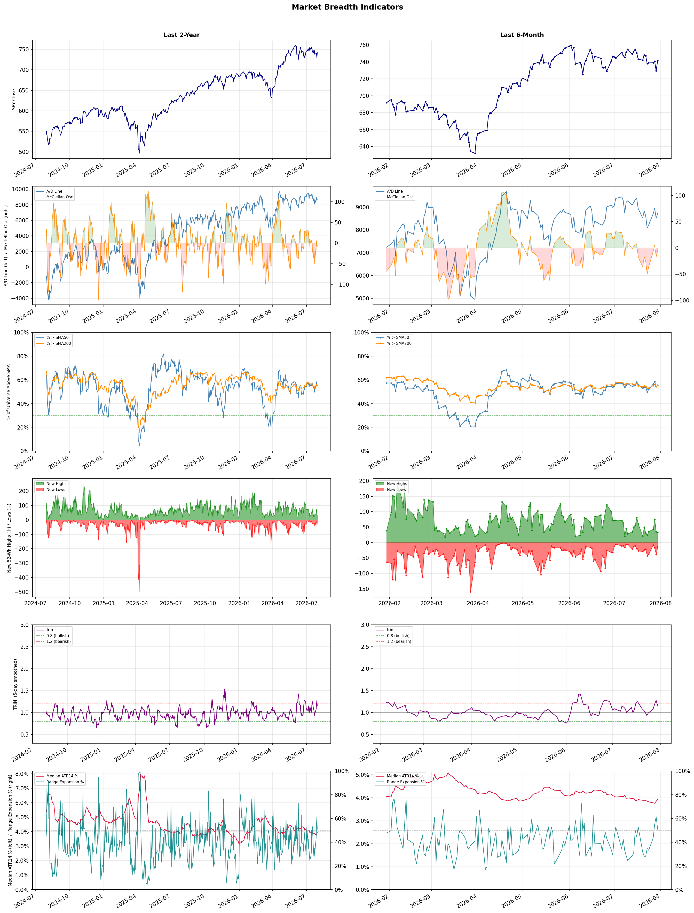

A daily market breadth and sector rotation report for active investors
| Item | Read |
|---|---|
| Regime | Selective Risk-On |
| Risk posture | Selective |
| Universe | 1,335 stocks tracked · 33 new 52-week highs · 30 active swing setups |
| Breadth | 55.3% of tracked stocks are above SMA50 — neutral range, new highs exceed new lows (33 vs 14), McClellan oscillator (breadth momentum) is negative at -5.0 |
| Leadership | Oil & Gas Refining & Marketing, Insurance - Life, and REIT - Hotel & Motel |
| Weakest groups | Uranium, Other Industrial Metals & Mining, and Solar |
Use this report to prioritize research and chart review; validate entries, stops, liquidity, earnings, and risk before acting.
| Item | Read |
|---|---|
| Primary read | Selective Risk-On regime with Selective risk posture. |
| Research queue | PBF, DINO, MPC, PSX, UGP |
| Leadership focus | Oil & Gas Refining & Marketing, Insurance - Life, and REIT - Hotel & Motel |
| Caution list | Uranium, Other Industrial Metals & Mining, and Solar |
| Review prompt | Check extension risk, chart location, fundamentals, valuation, and earnings before using any research row. |
| Item | Read |
|---|---|
| Primary read | 2 active risk warnings; use screen output as watchlist input only. |
| Bullish screens | ILMN, EC, SNOW, KOS, FIVN |
| Bearish screens | PSKY, SNPS, OTF, BRSL, LKQ |
| Alerts / levels | Automated trigger, stop, ATR, liquidity, reward/risk, and event-risk levels are pending future enrichment. |
| Review prompt | Open the linked chart, define trigger and invalidation, then check liquidity and event risk independently. |
Risk Posture: Selective — screen backdrop supports selective research in leading industries
Metric context: McClellan below -50 = elevated selling pressure; below -100 = washout territory. Range Expansion = share of stocks with daily range above their 20-day average. Signal Density = share of tracked names appearing in signal screens.
| Breadth Date | % > SMA50 | % > SMA200 | New Highs | New Lows | McClellan | Median Range | Avg Range | Median ATR14 | Range Expansion | Signal Density |
|---|---|---|---|---|---|---|---|---|---|---|
| 2026-07-30 | 55.3% | 55.7% | 33 | 14 | -5.0 | 3.8% | 4.5% | 3.9% | 50.9% | 2.2% |

Prior comparison date: July 29, 2026
| Metric | Prior | Current | Change |
|---|---|---|---|
| Regime | Selective Risk-On | Selective Risk-On | unchanged |
| Risk Posture | Cautious | Selective | changed |
| % > SMA50 | 54.5% | 55.3% | +0.8 pts |
| % > SMA200 | 54.3% | 55.7% | +1.4 pts |
| New Highs | 35 | 33 | -2 |
| New Lows | 39 | 14 | +25 |
Top-10 industries entering: Banks - Diversified, Diagnostics & Research, Medical Devices, and Oil & Gas Integrated. Top-10 industries leaving: Insurance Brokers, REIT - Office, REIT - Retail, and Travel Services. New multi-signal long setups: EC, FIVN, ILMN, KOS, NET. New multi-signal short setups: BLDR, BRSL, BXMT, LKQ, OTF.
| Status | Tickers | Read |
|---|---|---|
| Added | BAX, BDX, BLDR, BP, BRSL, BXMT, CVE, EC | New technical screen matches vs prior report. |
| Removed | ABBV, ALL, AMRX, BBAI, BHVN, CRWV, CTVA, DBX | No longer present in today's technical screen matches. |
| Still Active | ABVX, TJX, URBN | Appeared in both current and prior reports. |
| Promoted | none | Model Screen Score improved by at least 15 points. |
| Downgraded | ABVX, TJX, URBN | Model Screen Score declined by at least 15 points. |
| Direction | Industry | ETF | Prior Rank | Current Rank | Days | Rank Change |
|---|---|---|---|---|---|---|
| Rose | Oil & Gas Refining & Marketing | CRAK | 84 | 1 | 42 | +83 |
| Rose | Oil & Gas Integrated | XLE | 84 | 10 | 28 | +74 |
| Rose | Insurance Brokers | N/A | 85 | 16 | 42 | +69 |
| Rose | REIT - Healthcare Facilities | XLRE | 72 | 7 | 42 | +65 |
| Rose | Financial Data & Stock Exchanges | N/A | 88 | 24 | 42 | +64 |
Bull: The Oil & Gas Refining & Marketing sector, as represented by the CRAK ETF, is experiencing a bullish trend primarily due to a resurgence in demand for refined products amid geopolitical stability, particularly with hopes of Middle East de-escalation, which could stabilize oil prices and enhance refining margins. Additionally, the sector is benefiting from a long-awaited market recognition after years of underperformance, as indicated by CRAK hitting a new 52-week high and being highlighted as a top-performing area, suggesting that investor sentiment is shifting positively towards oil refiners like Marathon Petroleum, Delek US, and Valero Energy, which are well-positioned to capitalize on these favorable conditions.
Bear: While the recent rise in the CRAK ETF and positive sentiment towards oil refiners may suggest a bullish trend, several underlying factors could undermine this optimism. Geopolitical stability is notoriously fickle, and any resurgence in tensions could quickly reverse the current demand dynamics, leading to volatile refining margins. Additionally, the long-term shift towards renewable energy and increasing regulatory pressures on fossil fuels may dampen the growth prospects for the oil refining sector, making the current rally appear more like a short-term correction rather than a sustainable upward trend.
Verdict: The Oil & Gas Refining & Marketing sector is experiencing a bullish trend driven by a resurgence in demand for refined products amid hopes for geopolitical stability, which is enhancing refining margins and boosting investor sentiment. However, the key risk lies in the potential for renewed geopolitical tensions and the ongoing shift towards renewable energy, which could undermine the sector's growth prospects and lead to volatile market conditions. Investors should remain cautious and monitor geopolitical developments and regulatory changes closely.
Sources: Yahoo Finance, Google News
Bull: The Oil & Gas Integrated sector is likely experiencing rising relative strength due to increasing fair value estimates for major oil stocks, driven by higher oil prices, as highlighted in the Morningstar report. Additionally, the overall positive sentiment in the stock market, as indicated by the recent uptick in energy stocks and the broader advance in U.S. equities, suggests a favorable macroeconomic environment that supports investment in oil and gas stocks, as noted in multiple sector updates. This combination of rising oil prices and bullish market sentiment positions the sector for continued growth.
Bear: While rising oil prices may temporarily boost fair value estimates for oil stocks, the long-term outlook for the Oil & Gas Integrated sector remains precarious due to increasing regulatory pressures, a global shift towards renewable energy, and potential economic slowdowns that could dampen demand. Furthermore, the recent uptick in energy stocks may be more reflective of short-term market sentiment rather than sustainable growth, as investors often overlook underlying volatility and geopolitical risks that could significantly impact oil prices and sector performance.
Verdict: The Oil & Gas Integrated sector is experiencing rising relative strength primarily due to increasing oil prices and improved fair value estimates for major stocks, bolstered by positive market sentiment. However, investors should remain cautious of the key risks highlighted in the bear thesis, particularly the long-term impacts of regulatory pressures and the global shift towards renewable energy, which could undermine sustained growth in the sector. It is advisable to monitor geopolitical developments and economic indicators closely, as these factors could introduce volatility and affect future performance.
Sources: Yahoo Finance, Google News
Bull: The rising relative strength of the Insurance Brokers industry can be attributed to robust demand and positive earnings reports, as highlighted by Yahoo Finance's mention of M&A opportunities and StockStory's note on Ryan Specialty's strong performance in Q1. Despite recent fears surrounding AI disruption, the industry's fundamentals remain solid, driven by ongoing consolidation and a resilient market environment that supports growth, positioning insurance brokers favorably compared to other sectors.
Bear: While the bull thesis highlights strong demand and positive earnings, it underestimates the significant threat posed by AI advancements that could disrupt traditional insurance brokerage models. The recent headlines indicate a growing concern among investors about the potential for AI to streamline processes and reduce the need for human brokers, which could lead to a decline in margins and market share for established firms. Additionally, the recent drop from five-year highs and multiple compressions suggest that the market is already pricing in a potential downturn as the cycle shifts, indicating that the industry's current strength may be more illusory than robust.
Verdict: The Insurance Brokers industry is experiencing a rise due to strong demand and positive earnings reports, driven by ongoing consolidation and a resilient market environment. However, the key risk lies in the potential disruption from AI advancements, which could streamline processes and diminish the need for human brokers, leading to reduced margins and market share for established firms. Investors should closely monitor AI developments and their impact on traditional brokerage models as they assess the sustainability of the industry's growth.
Sources: Google News
Bull: The rising relative strength of the Healthcare Facilities REIT sector can be attributed to increasing investor interest in stable, income-generating assets amid broader market volatility, as evidenced by multiple headlines highlighting top healthcare REITs for the future. Additionally, the emphasis on healthcare investments in articles from The Motley Fool and U.S. News suggests a growing recognition of the sector's resilience and potential for long-term growth, particularly as demographic trends drive demand for healthcare services. This shift in focus towards defensive sectors like healthcare REITs is further supported by the contrasting performance of financial stocks, which have shown volatility, reinforcing the appeal of healthcare facilities as a more stable investment option.
Bear: While the rising relative strength of Healthcare Facilities REITs may seem promising, it is crucial to consider the potential headwinds facing the sector, such as rising interest rates and inflation, which can erode profit margins and increase borrowing costs. Additionally, the emphasis on healthcare investments may overlook the inherent risks tied to regulatory changes and reimbursement pressures in the healthcare industry, which could adversely impact the profitability of these REITs. Thus, the perceived stability of healthcare REITs could be misleading, as external economic factors and sector-specific challenges may undermine their long-term growth potential.
Verdict: The Healthcare Facilities REIT sector's rising strength is primarily driven by increasing investor demand for stable, income-generating assets amid broader market volatility and demographic trends favoring healthcare services. However, investors should remain cautious of potential headwinds from rising interest rates and inflation, which could pressure profit margins and borrowing costs, alongside regulatory changes that may impact profitability.
Sources: Yahoo Finance, Google News
Bull: The Financial Data & Stock Exchanges sector is likely experiencing rising relative strength due to the overall bullish sentiment in the stock market, as indicated by headlines discussing record highs and selective opportunities for investors. The positive outlook from firms like Morningstar and Fidelity Investments suggests that investors are increasingly seeking reliable financial data and analytics to navigate a complex market environment, especially amid balanced risks highlighted in the Q3 outlook. This growing demand for financial insights and transaction facilitation is driving increased activity and profitability within the sector.
Bear: While the rising relative strength in the Financial Data & Stock Exchanges sector may appear optimistic, it is crucial to recognize that the current market highs are being driven by speculative sentiment rather than fundamental growth. The lack of resolution in geopolitical tensions, such as the situation with Iran, coupled with the potential for economic headwinds like inflation and interest rate hikes, could lead to increased volatility and reduced trading volumes, ultimately undermining the profitability of financial data providers and exchanges. Furthermore, the reliance on selective opportunities may indicate a narrowing market breadth, which could expose the sector to significant risks if broader market conditions deteriorate.
Verdict: The Financial Data & Stock Exchanges sector is experiencing rising relative strength due to heightened investor demand for reliable financial insights amid a bullish stock market sentiment, as firms like Morningstar and Fidelity Investments highlight selective investment opportunities. However, key risks remain, particularly from speculative market dynamics and unresolved geopolitical tensions, which could lead to increased volatility and impact trading volumes, potentially undermining the sector's profitability. Investors should closely monitor these geopolitical developments and economic indicators to adjust their strategies accordingly.
Sources: Google News
| Direction | Industry | ETF | Prior Rank | Current Rank | Days | Rank Change |
|---|---|---|---|---|---|---|
| Fell | Semiconductors | SOXX | 4 | 78 | 42 | -74 |
| Fell | Semiconductor Equipment & Materials | SOXX | 3 | 77 | 42 | -74 |
| Fell | Electrical Equipment & Parts | XLI | 9 | 83 | 42 | -74 |
| Fell | Electronic Components | XLK | 1 | 69 | 42 | -68 |
| Fell | Building Products & Equipment | XHB | 8 | 75 | 35 | -67 |
Bear: While the recent selloff has indeed hit semiconductor stocks hard, the bounce in AI-related chip stocks like Intel and AMD indicates a potential recovery driven by strong demand for AI technologies. However, the broader market sentiment remains cautious, and the significant volatility in tech earnings, alongside the strange behavior of ETFs, raises concerns about the sustainability of this rebound. Additionally, the $1 trillion loss in market value signals a fundamental weakness in the sector, suggesting that any short-term rallies may be more reflective of speculative trading rather than a genuine recovery in underlying fundamentals.
Bull: The semiconductor industry is experiencing a decline in relative strength primarily due to a significant selloff that has seen chip stocks lose over $1 trillion, as highlighted by CNBC. This downturn is exacerbated by cautious sentiment from market analysts like Jim Cramer, who is advising caution amid fluctuating tech earnings, while the recent headlines indicate a temporary bounce in AI-related chip stocks like Intel and AMD may not be sustainable, leading to uncertainty in the sector's long-term outlook. Additionally, the mixed performance of ETFs and the strange behavior of the market suggest a lack of confidence among investors, further contributing to the industry's relative weakness.
Verdict: The semiconductor industry is experiencing a decline in relative strength primarily due to a significant selloff that has seen chip stocks lose over $1 trillion, as highlighted by CNBC. This downturn is exacerbated by cautious sentiment from market analysts like Jim Cramer, who is advising caution amid fluctuating tech earnings, while the recent headlines indicate a temporary bounce in AI-related chip stocks like Intel and AMD may not be sustainable, leading to uncertainty in the sector's long-term outlook. Additionally, the mixed performance of ETFs and the strange behavior of the market suggest a lack of confidence among investors, further contributing to the industry's relative weakness.
Sources: Yahoo Finance, Google News
Bear: While the bull analyst attributes the sector's decline to broader market volatility and investor sentiment, the reality is that the semiconductor equipment and materials sector is facing fundamental challenges that could undermine any short-term rallies. The significant sell-offs in key players like Ultra Clean Holdings and Axcelis Technologies indicate deeper issues within the supply chain and demand dynamics, particularly as the AI hype fades and companies reassess their capital expenditures. Furthermore, the mixed performance of AI-related stocks suggests that the initial excitement may not translate into sustained growth, raising concerns about the long-term viability of current valuations in the semiconductor space.
Bull: The Semiconductor Equipment & Materials sector is experiencing a decline in relative strength primarily due to broader market volatility and sector-specific selling pressures, as indicated by headlines highlighting significant drops in stocks like Ultra Clean Holdings and Axcelis Technologies. Additionally, the cautious sentiment expressed by market commentators, such as Jim Cramer, alongside the mixed performance of AI-related stocks, suggests that investor confidence is wavering, leading to a sector-wide pullback despite notable gains from major players like Intel and AMD. This environment creates uncertainty, causing investors to reassess their positions in semiconductor stocks, contributing to the relative weakness of the sector.
Verdict: The semiconductor equipment and materials sector is experiencing a decline due to fundamental challenges, including supply chain issues and shifting demand dynamics as the initial excitement around AI fades. This creates a risk of further sell-offs if companies continue to reassess their capital expenditures, potentially undermining any short-term gains. Investors should closely monitor these trends and consider adjusting their positions in semiconductor stocks to mitigate exposure to ongoing volatility.
Sources: Yahoo Finance, Google News
Bear: While the bull analyst attributes the decline in relative strength to broader market pressures, it's crucial to recognize that the electrical equipment and parts sector is facing fundamental challenges that could persist beyond temporary market fluctuations. Rising interest rates, which are anticipated in the Fed's upcoming decision, could lead to increased borrowing costs for manufacturers, dampening capital expenditures and slowing growth in the sector. Moreover, the renewed pressure on semiconductor stocks not only reflects current supply chain issues but also raises concerns about the long-term demand for electrical equipment, as technological advancements may shift focus away from traditional equipment towards more innovative solutions, leaving established players vulnerable.
Bull: The Electrical Equipment & Parts sector is likely experiencing a decline in relative strength due to broader market pressures, particularly as indicated by the mixed performance of exchange-traded funds and equity futures ahead of significant economic announcements, such as the Fed's interest rate decision. Additionally, the renewed pressure on semiconductor stocks, which are integral to the electrical equipment industry, suggests a ripple effect impacting investor sentiment and demand in the sector, despite the overall resilience in manufacturing highlighted in recent headlines.
Verdict: The decline in the Electrical Equipment & Parts sector is primarily driven by rising interest rates, which are expected to increase borrowing costs for manufacturers and dampen capital expenditures, thereby slowing growth. Additionally, the ongoing pressure on semiconductor stocks highlights supply chain vulnerabilities and raises concerns about long-term demand shifts towards innovative solutions, posing a significant risk to established players in the industry. Investors should closely monitor economic indicators and technological trends to assess the sector's resilience and potential recovery.
Sources: Yahoo Finance, Google News
Bear: While the bull analyst highlights a shift in investor sentiment towards software and chip stocks, this trend may indicate a broader vulnerability within the electronic components sector, as it struggles to keep pace with the rapid advancements and demand in higher-growth areas. Additionally, the mixed earnings outlook for companies like CTS and Benchmark suggests that underlying challenges, such as supply chain disruptions, rising material costs, and potential market saturation, could hinder the sector's recovery and limit its appeal to investors in the long term.
Bull: The Electronic Components sector is experiencing a decline in relative strength primarily due to a broader tech rally that is favoring software and chip stocks over traditional electronic components, as highlighted by the headlines indicating a tech-led rebound and strong performance from chip stocks. Additionally, the focus on companies like Microsoft following its Q4 earnings beat suggests that investor sentiment is shifting towards higher-growth tech areas, leaving electronic components relatively underappreciated in the current market environment. This shift is further emphasized by the mixed earnings outlook for companies within the sector, as noted in the reports on Q1 earnings for firms like CTS and Benchmark.
Verdict: The electronic components sector's decline is primarily driven by a market shift favoring high-growth tech stocks, particularly in software and semiconductors, which are capturing investor interest and capital. Key risks include persistent supply chain disruptions and rising material costs, which could exacerbate the sector's struggles and hinder recovery, making it crucial for investors to closely monitor earnings reports and market trends for signs of stabilization or further deterioration.
Sources: Yahoo Finance, Google News
Bear: While the recent housing affordability bill may suggest short-term challenges for new construction, it also reflects a government commitment to addressing housing supply issues, potentially leading to increased long-term demand for building products as affordability improves. Moreover, the rally in iBuyer stocks could indicate a temporary shift in investor sentiment rather than a fundamental change in the construction market, as traditional building products remain essential for meeting the ongoing housing demand amid a growing population and urbanization trends. Thus, the bearish outlook may overlook the potential for a rebound as market dynamics evolve.
Bull: The Building Products & Equipment sector is experiencing a decline in relative strength primarily due to rising housing affordability issues highlighted by the recent passage of a landmark housing affordability bill, which may initially dampen demand for new construction and related products. Additionally, the rally in iBuyer stocks like Opendoor and Offerpad suggests a shift in investor focus towards technology-driven real estate solutions, diverting attention away from traditional building products. This trend, combined with broader industry headwinds mentioned in the headlines, is contributing to the relative weakness of the sector.
Verdict: The Building Products & Equipment sector is currently facing a decline due to rising housing affordability issues, which may suppress new construction demand in the short term. However, the key risk from the bear case is the potential for a rebound driven by government initiatives aimed at improving housing supply and long-term demand dynamics, as urbanization continues. Investors should monitor legislative developments and shifts in market sentiment closely to gauge potential recovery opportunities in the sector.
Sources: Yahoo Finance, Google News
| Industry | Rank | ETF | 7d | 14d | 28d | 42d | Chg 42d | Size | 20D | 60D | Composite | Active Setups |
|---|---|---|---|---|---|---|---|---|---|---|---|---|
| Oil & Gas Refining & Marketing | 1 | CRAK | 1 | 1 | 47 | 84 | +83 | 7 | 25.2% | 20.1% | 0.964 | 0 |
| Insurance - Life | 2 | N/A | 5 | 9 | 33 | 50 | +48 | 7 | 11.7% | 17.1% | 0.910 | 0 |
| REIT - Hotel & Motel | 3 | XLRE | 9 | 21 | 9 | 6 | +3 | 9 | 3.6% | 28.3% | 0.863 | 0 |
| Banks - Diversified | 4 | N/A | 6 | 8 | 11 | 11 | +7 | 16 | 4.6% | 19.0% | 0.840 | 0 |
| Diagnostics & Research | 5 | N/A | 2 | 2 | 4 | 12 | +7 | 16 | 1.0% | 41.0% | 0.816 | 1 |
| Apparel Retail | 6 | XRT | 51 | 46 | 69 | 34 | +28 | 8 | 8.1% | 14.1% | 0.794 | 1 |
| REIT - Healthcare Facilities | 7 | XLRE | 4 | 11 | 16 | 72 | +65 | 10 | 3.1% | 9.8% | 0.789 | 0 |
| Medical Instruments & Supplies | 8 | N/A | 26 | 20 | 26 | 61 | +53 | 13 | 7.4% | 17.1% | 0.787 | 1 |
| Medical Devices | 9 | N/A | 29 | 30 | 32 | 46 | +37 | 21 | 5.1% | 13.8% | 0.782 | 1 |
| Oil & Gas Integrated | 10 | XLE | 7 | 41 | 84 | 79 | +69 | 10 | 20.4% | 2.0% | 0.775 | 0 |
Rank columns (7d–42d) show the industry's rank that many trading days ago — lower is stronger. Chg 42d = rank change vs 42 trading days ago — positive means the industry moved up. 20D and 60D are the mean stock return within the industry over that period. Active Setups: count of today's swing-trade candidates from this industry appearing across all signal screens.
| Industry | Rank | ETF | 7d | 14d | 28d | 42d | Chg 42d | Size | 20D | 60D | Composite | Active Setups |
|---|---|---|---|---|---|---|---|---|---|---|---|---|
| Uranium | 88 | URA | 88 | 88 | 88 | 71 | -17 | 6 | -8.1% | -30.4% | 0.071 | 0 |
| Other Industrial Metals & Mining | 87 | N/A | 87 | 87 | 82 | 40 | -47 | 21 | -16.9% | -28.8% | 0.105 | 0 |
| Solar | 86 | TAN | 84 | 67 | 67 | 26 | -60 | 8 | -18.5% | -7.8% | 0.118 | 0 |
| Aerospace & Defense | 85 | ITA | 83 | 85 | 66 | 65 | -20 | 26 | -18.0% | -17.0% | 0.123 | 0 |
| Utilities - Renewable | 84 | N/A | 86 | 83 | 75 | 47 | -37 | 7 | -15.2% | -15.0% | 0.144 | 0 |
| Electrical Equipment & Parts | 83 | XLI | 81 | 79 | 46 | 9 | -74 | 12 | -27.4% | -16.6% | 0.154 | 1 |
| Utilities - Independent Power Producers | 82 | XLU | 57 | 80 | 83 | 58 | -24 | 5 | -4.7% | -15.4% | 0.205 | 0 |
| Specialty Industrial Machinery | 81 | N/A | 82 | 81 | 70 | 51 | -30 | 21 | -9.6% | -13.8% | 0.212 | 1 |
| Communication Equipment | 80 | IYZ | 74 | 76 | 64 | 29 | -51 | 15 | -16.6% | -10.0% | 0.225 | 1 |
| Oil & Gas Equipment & Services | 79 | XES | 61 | 62 | 74 | 76 | -3 | 18 | -8.8% | -19.0% | 0.232 | 0 |
Rank columns (7d–42d) show the industry's rank that many trading days ago — lower is stronger. Chg 42d = rank change vs 42 trading days ago — positive means the industry moved up. 20D and 60D are the mean stock return within the industry over that period. Active Setups: count of today's swing-trade candidates from this industry appearing across all signal screens.
These are research candidates from top-ranked stocks, capped at five names per industry to avoid over-concentration. Returns shown (60D, 120D, 250D) are historical — they reflect where prices have already moved, not forward expectations. Extension Risk flags names that may require extra patience or a better entry point. They are not buy signals.
Chart: TV = TradingView chart (opens in browser); PDF = local chart file (if downloaded).
| Ticker | Name | Industry | Industry Rank | Market Cap | 60D Hist | 120D Hist | 250D Hist | Extension Risk | Research Reason | Chart |
|---|---|---|---|---|---|---|---|---|---|---|
| PBF | PBF Energy | Oil & Gas Refining & Marketing | 1 | N/A | 60.6% | 111.9% | 223.5% | Extended | Top-ranked in industry; extended | TV |
| DINO | HF Sinclair | Oil & Gas Refining & Marketing | 1 | N/A | 28.8% | 63.3% | 110.4% | Constructive | Top-ranked in industry | TV |
| MPC | Marathon Petroleum | Oil & Gas Refining & Marketing | 1 | N/A | 24.4% | 60.4% | 84.5% | Constructive | Top-ranked in industry | TV |
| PSX | Phillips 66 | Oil & Gas Refining & Marketing | 1 | N/A | 18.0% | 36.4% | 70.4% | Constructive | Top-ranked in industry | TV |
| UGP | Ultrapar Participacoes | Oil & Gas Refining & Marketing | 1 | N/A | 8.0% | 31.0% | 111.1% | Constructive | Top-ranked in industry | TV |
| PRU | Prudential Financial | Insurance - Life | 2 | N/A | 25.7% | 23.0% | 18.5% | Constructive | Top-ranked in industry | TV |
| LNC | Lincoln National | Insurance - Life | 2 | N/A | 24.6% | 17.2% | 20.8% | Constructive | Top-ranked in industry | TV |
| MET | MetLife | Insurance - Life | 2 | N/A | 23.0% | 28.9% | 27.8% | Constructive | Top-ranked in industry | TV |
| MFC | Manulife Financial | Insurance - Life | 2 | N/A | 15.7% | 19.2% | 43.9% | Constructive | Top-ranked in industry | TV |
| PUK | Prudential | Insurance - Life | 2 | N/A | 6.0% | -3.3% | 21.4% | Constructive | Top-ranked in industry | TV |
| RLJ | RLJ Lodging Trust | REIT - Hotel & Motel | 3 | N/A | 47.4% | 58.8% | 66.4% | Constructive | Top-ranked in industry | TV |
| PK | Park Hotels & Resorts Inc | REIT - Hotel & Motel | 3 | N/A | 36.4% | 34.8% | 41.3% | Constructive | Top-ranked in industry | TV |
| DRH | DIAMONDROCK HOSPITALITY CO | REIT - Hotel & Motel | 3 | N/A | 26.2% | 36.9% | 67.2% | Constructive | Top-ranked in industry | TV |
| SHO | Sunstone Hotel Investors Inc | REIT - Hotel & Motel | 3 | N/A | 20.5% | 29.9% | 33.7% | Constructive | Top-ranked in industry | TV |
| HST | Host Hotels & Resorts | REIT - Hotel & Motel | 3 | N/A | 20.3% | 32.1% | 59.6% | Constructive | Top-ranked in industry | TV |
| BBVA | Banco Bilbao Vizcaya Argentaria | Banks - Diversified | 4 | N/A | 32.5% | 19.0% | 65.0% | Constructive | Top-ranked in industry | TV |
| MUFG | Mitsubishi UFJ Financial Group | Banks - Diversified | 4 | N/A | 28.1% | 23.3% | 61.9% | Constructive | Top-ranked in industry | TV |
| ING | ING Groep | Banks - Diversified | 4 | N/A | 25.7% | 18.2% | 49.6% | Constructive | Top-ranked in industry | TV |
| UBS | UBS Group | Banks - Diversified | 4 | N/A | 23.1% | 22.0% | 43.0% | Constructive | Top-ranked in industry | TV |
| HSBC | HSBC Holdings | Banks - Diversified | 4 | N/A | 18.8% | 23.3% | 74.7% | Constructive | Top-ranked in industry | TV |
These are technical screen matches from existing signal files. They are not trade recommendations. Trigger, stop, ATR, liquidity, reward/risk, and event risk still require separate validation until those inputs are available.
Model Screen Score is weighted by signal count, industry rank, freshness, and setup type. It is not a probability of profit, expected return, or suitability rating. Industry cap: max 3 candidates per industry.
Signal glossary: Momentum Pullback = stock in an uptrend that has pulled back 10–30% and shows re-entry conditions. MA Compression = short- and long-term moving averages converging, often preceding a directional move. Three-Day Up/Down = three consecutive closes in the same direction. New 52Wk High/Low = price reached a new annual extreme.
Chart: TV = TradingView chart (opens in browser); PDF = local chart file (if downloaded).
| Ticker | Industry | Setups | Close | Industry Rank | Signal Count | Model Screen Score | Reason | Chart |
|---|---|---|---|---|---|---|---|---|
| ILMN | Diagnostics & Research | New 52Wk High; Three-Day Up | 205.09 | 5 | 2 | 93 | Multi-signal; top industry breakout | TV |
| EC | Oil & Gas Integrated | New 52Wk High; Three-Day Up | 17.04 | 10 | 2 | 85 | Multi-signal; top industry breakout | TV |
| SNOW | Software - Application | New 52Wk High; Three-Day Up | 298.10 | 25 | 2 | 77 | Multi-signal; new-high strength | TV |
| KOS | Oil & Gas E&P | Momentum Pullback; Three-Day Up | 2.56 | 37 | 2 | 70 | Multi-signal; pullback setup | TV |
| FIVN | Software - Infrastructure | New 52Wk High; Three-Day Up | 27.66 | 41 | 2 | 65 | Multi-signal; new-high strength | TV |
| NET | Software - Infrastructure | New 52Wk High; Three-Day Up | 283.39 | 41 | 2 | 65 | Multi-signal; new-high strength | TV |
| SSL | Specialty Chemicals | Momentum Pullback; Three-Day Up | 11.71 | 62 | 2 | 55 | Multi-signal; pullback setup | TV |
| GH | Diagnostics & Research | Momentum Pullback | 152.35 | 5 | 1 | 58 | Single-signal; top industry pullback | TV |
| PSNL | Diagnostics & Research | Momentum Pullback | 12.28 | 5 | 1 | 58 | Single-signal; top industry pullback | TV |
| PUK | Insurance - Life | Three-Day Up | 30.98 | 2 | 1 | 55 | Single-signal; top industry setup | TV |
| TJX | Apparel Retail | MA Compression | 159.26 | 6 | 1 | 53 | Single-signal; top industry setup | TV |
| URBN | Apparel Retail | MA Compression | 75.74 | 6 | 1 | 53 | Single-signal; top industry setup | TV |
| BDX | Medical Instruments & Supplies | MA Compression | 165.45 | 8 | 1 | 45 | Single-signal; top industry setup | TV |
| ZBH | Medical Devices | MA Compression | 94.96 | 9 | 1 | 45 | Single-signal; top industry setup | TV |
| LNG | Oil & Gas Midstream | Momentum Pullback | 258.06 | 20 | 1 | 42 | Single-signal; pullback setup | TV |
| FSLY | Software - Application | Momentum Pullback | 21.55 | 25 | 1 | 42 | Single-signal; pullback setup | TV |
| BAX | Medical Instruments & Supplies | Three-Day Up | 26.75 | 8 | 1 | 40 | Single-signal; top industry setup | TV |
| TNDM | Medical Devices | Three-Day Up | 19.01 | 9 | 1 | 40 | Single-signal; top industry setup | TV |
| BP | Oil & Gas Integrated | Three-Day Up | 44.22 | 10 | 1 | 40 | Single-signal; top industry setup | TV |
| CVE | Oil & Gas Integrated | Three-Day Up | 30.32 | 10 | 1 | 40 | Single-signal; top industry setup | TV |
| TAK | Drug Manufacturers - Specialty & Generic | MA Compression | 17.25 | 22 | 1 | 37 | Single-signal; compression setup | TV |
| HNGE | Health Information Services | Momentum Pullback | 75.11 | 32 | 1 | 35 | Single-signal; pullback setup | TV |
| ABVX | Biotechnology | Momentum Pullback | 124.33 | 35 | 1 | 35 | Single-signal; pullback setup | TV |
Bearish setups — stocks making new lows or showing persistent downside patterns. Validate carefully before acting.
| Ticker | Industry | Setups | Close | Industry Rank | Signal Count | Model Screen Score | Reason | Chart |
|---|---|---|---|---|---|---|---|---|
| PSKY | Entertainment | New 52Wk Low; Three-Day Down | 7.81 | 29 | 2 | 40 | Multi-signal; new-low weakness | TV |
| SNPS | Software - Infrastructure | New 52Wk Low; Three-Day Down | 372.33 | 41 | 2 | 35 | Multi-signal; new-low weakness | TV |
| OTF | Asset Management | New 52Wk Low; Three-Day Down | 9.87 | 44 | 2 | 35 | Multi-signal; new-low weakness | TV |
| BRSL | Gambling | New 52Wk Low; Three-Day Down | 10.17 | 66 | 2 | 25 | Multi-signal; new-low weakness | TV |
| LKQ | Auto Parts | New 52Wk Low; Three-Day Down | 22.60 | 70 | 2 | 25 | Multi-signal; new-low weakness | TV |
| BXMT | REIT - Mortgage | New 52Wk Low; Three-Day Down | 14.97 | 73 | 2 | 25 | Multi-signal; new-low weakness | TV |
| BLDR | Building Products & Equipment | New 52Wk Low; Three-Day Down | 66.01 | 75 | 2 | 25 | Multi-signal; new-low weakness | TV |
How To Use This Report
| Use | Purpose |
|---|---|
| Market map | Start with breadth, regime, risk warnings, and what changed since the prior report. |
| Industry scan | Use leading, deteriorating, rising, and declining industries to focus research. |
| Research queue | Treat long-term candidates as names for deeper fundamental, valuation, and chart review. |
| Technical review | Treat bullish and bearish screen matches as watchlist inputs that require independent trigger, stop, liquidity, and event-risk checks. |
| Source follow-up | Use chart links and source files to verify raw inputs before relying on any row. |
What This Report Is Not
| Not | Meaning |
|---|---|
| Investment advice | The report does not evaluate personal objectives, risk tolerance, tax situation, account type, or suitability. |
| Buy/sell recommendation | Named tickers are research candidates or screen matches, not recommendations to transact. |
| Price target | The report does not provide fair value estimates, targets, or expected returns. |
| Trade plan | Trigger, stop, sizing, reward/risk, liquidity, and event-risk review remain separate user work. |
| Performance claim | Model Screen Score is not validated historical performance or a forecast of future results. |
| Item | Note |
|---|---|
| Version | Daily Report Methodology v1 |
| Model Screen Score | Screen-fit rank based on signal count, industry rank, freshness, and setup type. |
| Not predictive proof | The score is not expected return, probability of profit, historical validation, or suitability analysis. |
| Industry ranks | Composite industry ranks use existing daily ranking outputs and historical rank columns when available. |
| Research candidates | Long-term rows are research candidates from ranked stocks and leading industries, with historical returns labeled as historical only. |
| Technical matches | Bullish and bearish rows are screen matches requiring independent chart, trigger, stop, liquidity, and event-risk review. |
| Source | Status | Rows | Path |
|---|---|---|---|
| Market breadth | present | 1254 | breadth_20260730.csv |
| Industry composite rankings | present | 88 | all_industry_composite_20260730.csv |
| Top ranked stocks | present | 117 | top_ranked_composite_20260730.csv |
| All ranked stocks | present | 1335 | all_stocks_composite_sorted_20260730.csv |
| Top momentum pullbacks | present | 1485 | top_momentum_pullbacks_20260730.csv |
| MA compression | present | 1485 | ma_compression_stocks_20260730.csv |
| Three-day up/down | present | 105 | three_day_up_down_stocks_20260730.csv |
| New 52-week members | present | 47 | breadth_new_52wk_members_20260730.csv |
This report is generated from automated technical screens and is for informational and research purposes only. It is not investment advice, a solicitation, or a recommendation to buy or sell any security. Past performance is not indicative of future results. You are solely responsible for your own investment decisions. Consult a licensed financial advisor before acting on any information herein.